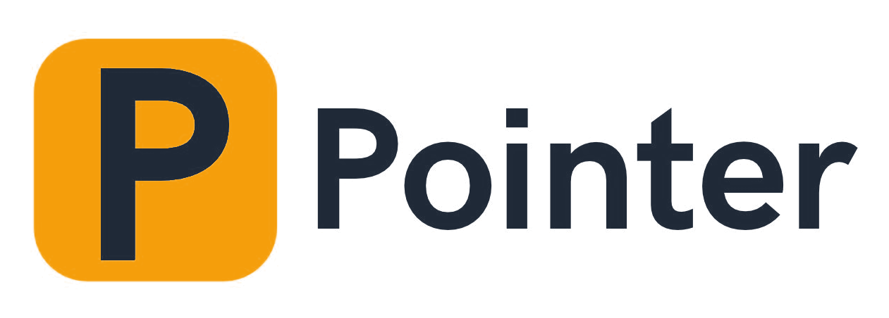

requisitos de prioridad Alta, escritos en EARS, 100 % cumplidos
tareas hechas una por una, con su commit, en 2 funcionalidades
tests automáticos en verde, 0 fallos
colores escritos a mano en el CSS: ahora todo sale de las variables de la marca
Rendimiento
Accesibilidad
Buenas prácticas
SEO
errores de la IA detectados y corregidos
riesgos identificados, cada uno con su mitigación
piezas con ficha y leyenda «Generado con IA»
personas reales en imágenes, voces o videos